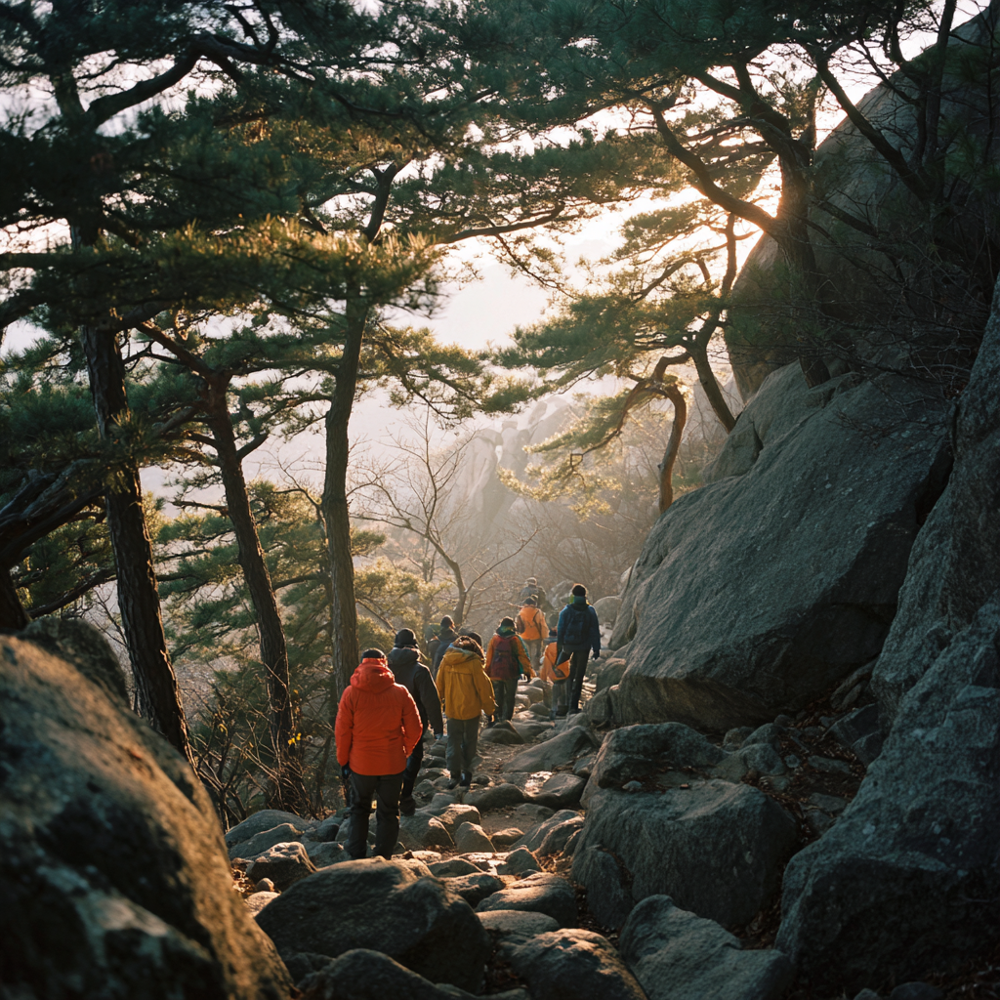
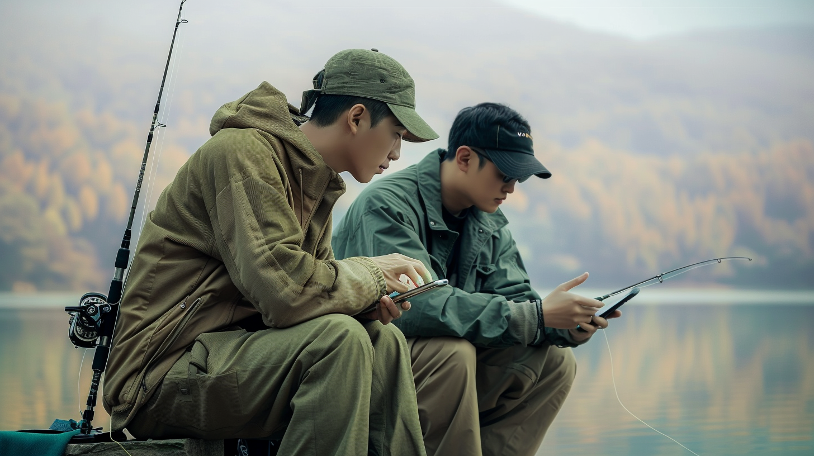

취향 공동체가 브랜드를 만든다
블랙야크 알파인 클럽
2025.06
서울의 등산로 초입. 매주 같은 시간, 비슷한 옷을 입고 산에 오르는 사람들 사이엔 낯설지만 따뜻한 연대가 있다. 그들의 공통점은 단 하나. ‘산을 좋아한다’는 취향이다.
블랙야크는 이 취향의 연결을 브랜드의 중심으로 삼았다. ‘블랙야크 알파인 클럽(BAC)’이라는 이름 아래, 산을 오르는 이들을 하나의 커뮤니티로 묶은 것이다. 브랜드가 ‘상품’을 넘어서 하나의 ‘공동체’가 되는 방식. 웨더몬스터가 주목해야 할 지점이다.
블랙야크는 단순한 등산 동호회를 만든 게 아니다. 명산 100, 섬앤산, 클린마운틴 등 인증 기반 미션을 통해 사용자들이 자신의 등산 경험을 브랜드 안에 축적하게 만들었다. BAC 회원은 GPS 기반 인증을 하면 포인트를 받고, 굿즈나 행사 참여 기회를 얻는다. 이 구조는 ‘참여 → 인정 → 리워드’의 선순환을 만든다. 등산이라는 개인 활동이, 브랜드를 중심으로 한 집단 경험으로 재구성된 것이다.
BAC는 단순히 등산을 좋아하는 사람들의 모임이 아니라, 브랜드가 만든 경험 구조 안에서 사용자들이 ‘기록’과 ‘관계’를 쌓는 플랫폼이다. 이 구조가 실제로 어떻게 작동하는지 보여주는 장면도 있다. 블랙야크는 지금, ‘BAC 클럽데이 2025’를 통해 전국의 알파인클럽 회원들을 한자리에 모으고 있다. 이 오프라인 이벤트는 단순한 브랜드 행사가 아니다. 취향과 경험이 브랜드를 중심으로 연결되는 구조가 현실에서 어떻게 작동하는지를 보여주는 대표적인 사례다.

웨더몬스터 역시 낚시라는 활동 속에 이런 구조를 이식할 수 있다. 예를 들어, ‘월간 캐스팅 미션’을 통해 사용자에게 장소, 날씨, 루어 타입 등의 미션을 주고 후기를 인증 콘텐츠로 만들도록 유도할 수 있다. 이 기록이 쌓이면 사용자들은 자신의 취향과 이력, 그리고 커뮤니티 속 역할을 브랜드 안에 남긴다. 경험을 콘텐츠로 만들게 하고, 그 콘텐츠를 브랜드가 다시 포장해주는 구조. 이 구조는, 웨더몬스터가 ‘도시 낚시’라는 문법으로 새롭게 풀어낼 수 있다.
브랜드는 더 이상 제품을 파는 주체가 아니다. 취향과 경험을 연결하는 플랫폼이자, 감정의 허브가 되고 있다. BAC는 그 전환을 가장 전략적으로 보여주는 사례다. 중요한 건, 웨더몬스터 역시 이런 전환이 가능한 브랜드라는 점이다. 낚시는 ‘고요한 몰입’, ‘날씨를 느끼는 행위’, ‘취향의 집약’이자 브랜드가 공동체로 확장될 수 있는 훌륭한 감성 기반이다. ‘어디서 낚시했는지’를 넘어서 ‘어떤 날씨와 마음으로 낚시했는지’를 공유하게 만든다면, 웨더몬스터는 단순한 낚시복 브랜드가 아니라 취향 공동체의 중심이 될 수 있다.
#Insight Tags
#브랜드커뮤니티 #참여형브랜드
Keyword: 커뮤니티 기반 브랜드, 사용자 경험 설계, 팬덤 중심 브랜딩